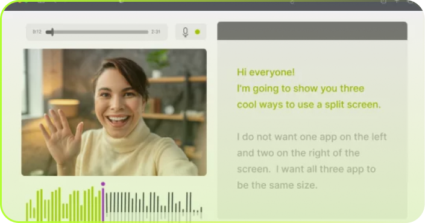
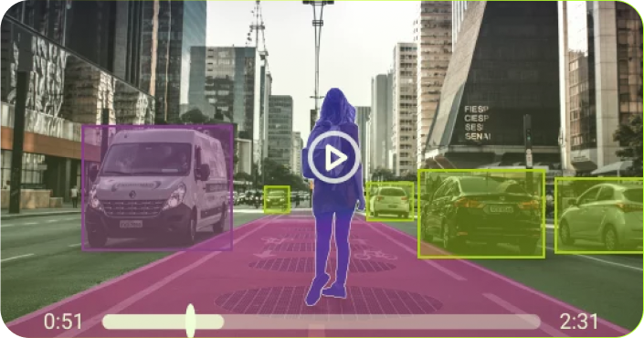
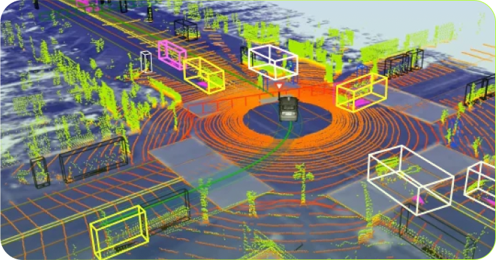

Типы данных
-
Текст
Для организоции и обработки больших файлов и коллекций файлов, наша компания имеет несколько команд экспертов по аннотациям данных, которые могут обеспечить классификацию и маркировку ключевых слов, распознавание именованных объектов, извлечение взаимосвязей, анализ настроений и категоризация текста.

-
Изображения
В компании Data Light есть специалисты с необходимыми навыками для предоставления услуг аннотирования данных: двумерные ограничивающие рамки, многоугольники, семантическая сегментация, маркировка, а также аннотации точек и ориентиров. Наши специалисты обрабатывают изображения, чтобы машины могли видеть мир как люди.

-
Видео
Наши эксперты по аннотациям данных работают с лучшими инструментами аннотаций для компьютерного зрения. Мы аннотируем ваши видео, преобразуя каждое из них в набор кадров и восстанавливая их после завершения аннотации. В Data Light вы получите стабильное отслеживание объектов и быструю маркировку видео.
 -
Аудио
Наша компания предоставляет услуги по распознаванию голоса. Имея команду, которая интерпретирует аудио, вы можете писать документы, управлять функциями различных устройств и получать информацию, используя только голосовой ввод.
 -
Лидарные облака

Разметка объектов из реального мира в трёх измерениях. Наши специалисты также могут применять 3D-сегментацию для определения движения объектов в видео и рисовать 3D-кубоиды вокруг объектов для их обнаружения.
